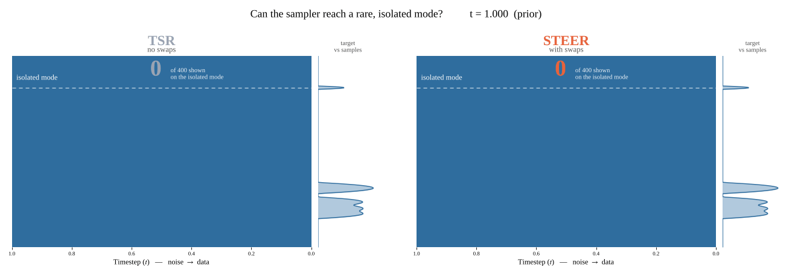
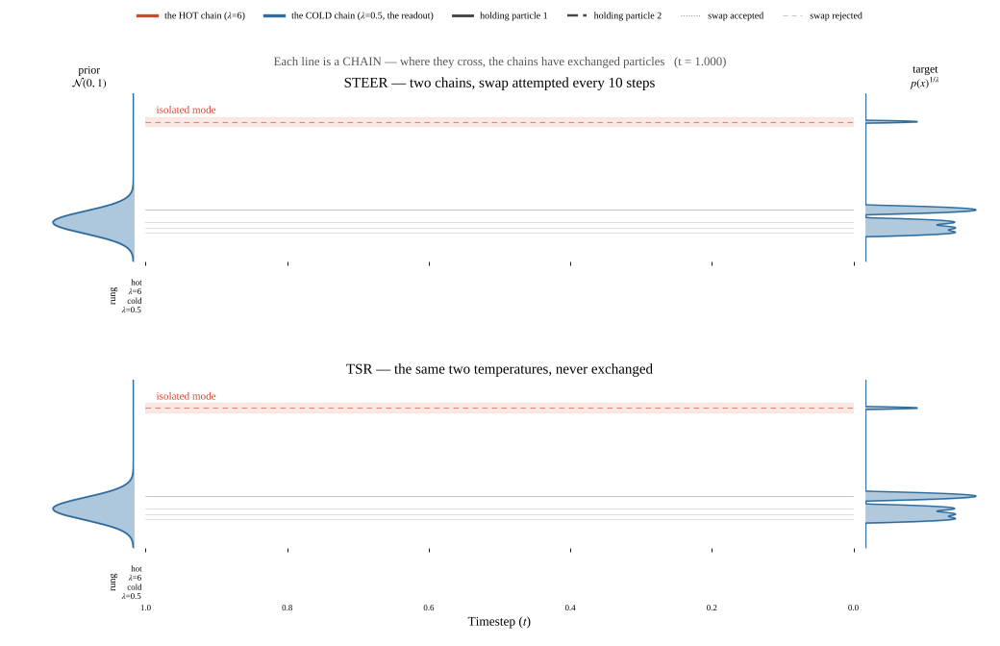

STEER
Diverse Low-Temperature Diffusion Sampling through Replica Exchange
Abstract
Diffusion models achieve strong generative performance across domains. However, achieving high sample quality under hard physical and dynamical constraints, as in protein design and robotic manipulation, remains difficult. Existing inference-time methods either require a costly or unavailable verifier, or avoid a verifier at the cost of reduced diversity. To relieve this tension, we introduce Score Tempering with Exchange between Exploratory Replicas (STEER), a verifier-free inference-time method that replaces single-chain sharpening with global search using multiple diffusion chains. During sampling, neighboring chains, each at different sharpening strengths, exchange particles according to an energy-based acceptance rate, propagating exploration to outputted samples. Across a diverse range of domains, from synthetic multimodal distributions to image generation, STEER achieves a better fidelity–diversity trade-off and improves success rates on continuous-control tasks in both verifier-based and verifier-free settings. Our findings suggest that effective diffusion tempering requires going beyond local updates to population-based global search that enhance fidelity and diversity.
How it works

Exchanges propagate exploratory samples to the target chain
